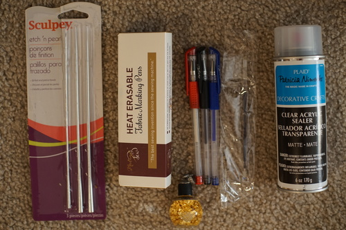
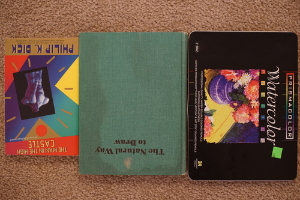

A decade ago, I thought the term ABJD was really silly. How many ball jointed dolls aren't Asian? There's Goodreau, Blue Blood Doll, and Batchix I suppose but the vast majority were Asian, so what's the point in adding it?
There is now a point in adding the A. I was watching a video of BJDC in Texas and it's full of strange looking Connie Lowe dolls. I don't really have a personal problem with Connie Lowe or her funky dolls existing, but these aren't even close to the same style of doll that was popular 10 years ago (and now!) A huge number of these dolls are just ball jointed resin versions of Western dolls.
You can see at the end of this video how the popular dolls have changed over the years. The convention started off as a Volks only convention and now it seems to be a celebration of Kaye Wiggs and Connie Lowe. The difference is no longer "I like Dollzone, you like Cerberus Project." The aesthetic has completely changed!
I also found a video of Resin Rose in Oregon. There's some Blythes which definitely aren't BJDs, but lots of ABJD! I won't give up hope yet. Even rap1993 and maddybeardolls are closer to the ABJD aesthetic than Connie Lowe.


I hit 10k photos on my camera! That's a big milestone right? It's 5 days away from being 2 years old! I thought my filenames were going to go into the next empty digit but it seems to have overflowed to 00001 instead. Why?? Why is that digit even there! I gotta figure something out before my older images on this site get overwritten...
Ryan needed it!
This will stop pages with pastels from getting everything dirty right? maybe? I have no plans to try this on a doll (yet)
Another Ryan find. I didn't watch too much of this show when I was little but I like cowboy aerid.
The high schooler cashier said each item was 50 cents but my total came out to $2.16. I even asked if she got everything and she was sure it was correct. Okay...
I didn't plan to ever get watercolor pencils because they make faceups look grainy and awful, but there are more uses than faceups. The price and brand was right.
I'm going to decide if Do Androids Dream of Electric Sheep is a one off hit or not.
The DoA mods still haven't responded to me so I've decided to go doll rogue. What does this mean? All my dolls will be receiving bandanas. I will not make them smoke cigarettes because that's yucky. Also I'm getting a tattoo of Romantic Glance Williams on my thigh.